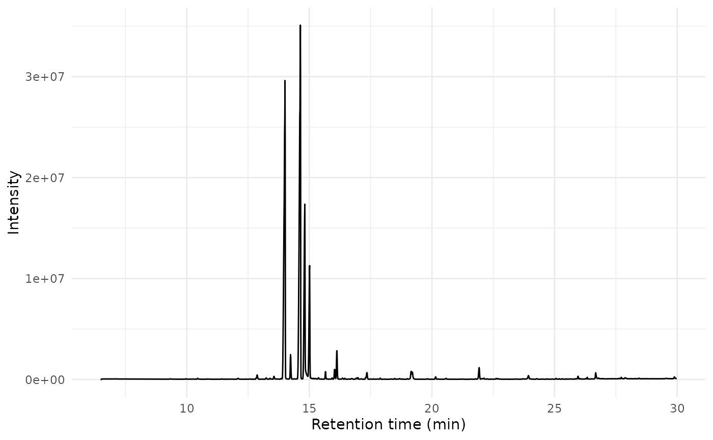

MS chromatograms are returned by default in long format
with three columns: retention time, m/z, and intensity.
As an example, we can load the ‘Varian’ SMS chromatogram included in
the chromConverterExtraTests package.
# download example Varian SMS file from the web
path_sms <- tempfile(fileext = ".sms")
download.file("https://raw.github.com/ethanbass/chromConverterExtraTests/master/inst/STRD15.SMS", destfile = path_sms)
dat <- read_chroms(path_sms, format_in = "varian_sms", format_out = "data.frame")Plot TIC and mass spectra use base R syntax
x <- dat[[1]]$MS1
# derive TIC using aggregate
tic <- aggregate(intensity ~ rt, data = x, FUN = sum)
# plot TIC
matplot(tic$rt, tic$intensity, type = 'l',
ylab = "Total intensity", xlab = "Time (min)")Here is a simple plot function you could use to plot mass spectra using base R graphics:
plot_spec <- function(spec, lab_int=0.2, digits=1){
plot(spec, type = "h", xlab = "m/z", ylab = "Intensity")
lab.idx <- which(spec$intensity > lab_int * max(spec$intensity))
text(spec$mz[lab.idx], spec$intensity[lab.idx], round(spec$mz[lab.idx],
digits), offset = 0.25, pos = 3, cex = 0.5)
}Mass spectra can be extracted by filtering on the time column. For example to get the mass spectrum of the first scan:
times <- unique(x$rt)
spec <- x[x$rt == times[100], -1]
plot_spec(spec)Plot TIC and mass spectra using dplyr syntax
Plot TIC with dplyr:
tic <- x |> dplyr::group_by(rt) |> dplyr::summarize_at("intensity", sum)
plot(intensity ~ rt, data=tic, type = 'l',
ylab = "Total intensity", xlab = "Time (min)")Plot spectrum with dplyr:

Plot TIC and mass spectra using data.table syntax
Convert to data.table:
x <- data.table::as.data.table(x)chromConverter can also return chromatograms in data.table format directly:
dat <- read_chroms(path_sms, format_in = "varian_sms", format_out = "data.table")Extract the total ion chromatogram:
tic <- x[, .(intensity = sum(intensity)), by = rt]
matplot(tic$rt, tic$intensity, type = 'l',
ylab = "Total intensity", xlab = "Time (min)")
Extract the base ion chromatogram:
bpc <- x[, .(intensity = max(intensity)), by = rt]
matplot(bpc$rt, bpc$intensity, type = 'l',
ylab = "Base ion chromatogram", xlab = "Time (min)")To obtain a mass spectrum we just filter by retention time as before:
plot_spec(x[rt == 7.26355, c('mz', 'intensity')])Plot TIC and mass spectra using ggplot
ggplot(data = tic, aes(x=rt, y=intensity)) +
geom_line() +
xlab("Retention time (min)") +
ylab("Intensity") +
theme_minimal()
Plot mass spectrum with ggplot:
lab_int <- 0.2
digits <- 1
dplyr::filter(x, rt == 7.26355) |>
dplyr::select(mz, intensity) |>
ggplot(aes(x = mz, y = intensity)) +
geom_segment(aes(xend = mz, yend = 0), linewidth = 0.5) +
geom_text(data = subset(spec, intensity > lab_int * max(intensity)),
aes(label = round(mz, digits)),
vjust = -0.5, size = 2) +
labs(x = "m/z", y = "Intensity") +
theme_minimal()
Session Information
sessionInfo()
#> R version 4.5.1 (2025-06-13)
#> Platform: x86_64-pc-linux-gnu
#> Running under: Ubuntu 24.04.3 LTS
#>
#> Matrix products: default
#> BLAS: /usr/lib/x86_64-linux-gnu/openblas-pthread/libblas.so.3
#> LAPACK: /usr/lib/x86_64-linux-gnu/openblas-pthread/libopenblasp-r0.3.26.so; LAPACK version 3.12.0
#>
#> locale:
#> [1] LC_CTYPE=C.UTF-8 LC_NUMERIC=C LC_TIME=C.UTF-8
#> [4] LC_COLLATE=C.UTF-8 LC_MONETARY=C.UTF-8 LC_MESSAGES=C.UTF-8
#> [7] LC_PAPER=C.UTF-8 LC_NAME=C LC_ADDRESS=C
#> [10] LC_TELEPHONE=C LC_MEASUREMENT=C.UTF-8 LC_IDENTIFICATION=C
#>
#> time zone: UTC
#> tzcode source: system (glibc)
#>
#> attached base packages:
#> [1] stats graphics grDevices utils datasets methods base
#>
#> other attached packages:
#> [1] data.table_1.17.8 ggplot2_3.5.2
#> [3] chromConverter_0.8.0.9000
#>
#> loaded via a namespace (and not attached):
#> [1] rappdirs_0.3.3 sass_0.4.10 generics_0.1.4 bitops_1.0-9
#> [5] xml2_1.4.0 stringi_1.8.7 lattice_0.22-7 digest_0.6.37
#> [9] magrittr_2.0.3 evaluate_1.0.5 grid_4.5.1 RColorBrewer_1.1-3
#> [13] fastmap_1.2.0 rprojroot_2.1.1 cellranger_1.1.0 jsonlite_2.0.0
#> [17] Matrix_1.7-3 purrr_1.1.0 scales_1.4.0 RaMS_1.4.3
#> [21] pbapply_1.7-4 textshaping_1.0.3 jquerylib_0.1.4 cli_3.6.5
#> [25] rlang_1.1.6 bit64_4.6.0-1 withr_3.0.2 base64enc_0.1-3
#> [29] cachem_1.1.0 yaml_2.3.10 parallel_4.5.1 tools_4.5.1
#> [33] dplyr_1.1.4 here_1.0.1 reticulate_1.43.0 vctrs_0.6.5
#> [37] R6_2.6.1 png_0.1-8 lifecycle_1.0.4 stringr_1.5.2
#> [41] fs_1.6.6 bit_4.6.0 ragg_1.5.0 pkgconfig_2.0.3
#> [45] desc_1.4.3 pkgdown_2.1.3 bslib_0.9.0 pillar_1.11.0
#> [49] gtable_0.3.6 glue_1.8.0 Rcpp_1.1.0 systemfonts_1.2.3
#> [53] tidyselect_1.2.1 xfun_0.53 tibble_3.3.0 knitr_1.50
#> [57] farver_2.1.2 htmltools_0.5.8.1 labeling_0.4.3 rmarkdown_2.29
#> [61] compiler_4.5.1 entab_0.3.1 readxl_1.4.5